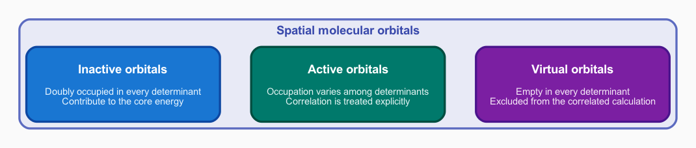
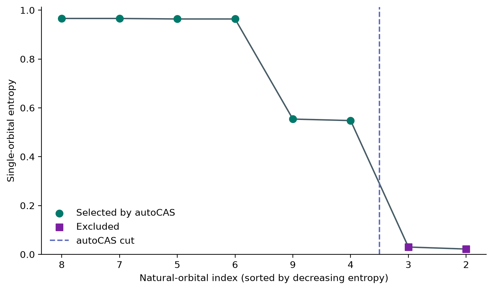

Choosing the active space
Chapter focus
Which electrons and orbitals must the calculation treat explicitly?
Learning objectives
After completing this chapter, you will be able to:
Explain why strongly correlated systems require more than one determinant.
Distinguish inactive, active, and virtual orbitals.
Select a valence active space with QDK/Chemistry.
Explain how natural orbitals and reduced density matrices support active-space selection.
Explain how orbital entropies can refine an active-space choice.
Evaluate the tradeoff between active-space accuracy and problem size.
Lab notebook assignment
Complete Active-space model. Record the evidence used to select the active space, not only the final orbital and electron counts. Explain what the energy comparison establishes within the chosen basis and identify the energy that will serve as the algorithmic reference.
Example download
First download tutorial_orbital_coordinates.py, which contains the reusable numerical machinery for choosing coordinates inside degenerate orbital subspaces.
Then download tutorial_choose_active_space.py and tutorial_choose_active_space.ipynb, and save all three files in your tutorial working directory.
Open all three files in Visual Studio Code and review the complete scripts, including imports and setup code omitted from the excerpts below.
The script resumes the stretched N2 workflow from Describing the molecule before constructing and refining the correlated model.
Unlike the earlier examples, this script organizes the calculation into importable functions so that the command-line example and interactive Jupyter notebook use the same tested chemistry workflow rather than duplicate it.
The limits of one determinant
As the previous chapter explains, the Hartree–Fock method restricts the wavefunction to one optimized Slater determinant. This determinant represents one electron configuration, a pattern of occupied spin orbitals introduced in Orbitals and determinants. This description is often a useful starting point near an equilibrium geometry, where one configuration dominates the ground-state wavefunction, as discussed for N2 in Specify the molecular system chapter. Stretching a chemical bond can make several configurations similar in energy because electrons can no longer be assigned adequately to one fixed pattern of occupied and unoccupied molecular orbitals. The need to combine these multiple important configurations is called static correlation. The stretched N2 geometry has been selected to demonstrate this regime. The correlated calculations below evaluate static correlation by constructing a multi-determinant wavefunction and measuring orbital-occupation entropies.
A configuration interaction (CI) calculation addresses this limitation by calculating a wavefunction expanded in multiple Slater determinants:
where \(\vert \Phi_I \rangle\) is determinant \(I\) and \(c_I\) is its coefficient.
Every determinant \(\Phi_I\), including \(\Phi_{\mathrm{HF}}\), is constructed from one allowed choice of occupied spin orbitals.
Different choices represent different electron configurations.
Full configuration interaction (FCI) includes every determinant consistent with a chosen finite orbital basis and fixed \((n_\alpha,n_\beta)\) sector.
It therefore gives the exact eigenvalues of the finite-basis Hamiltonian in that sector, up to numerical solver tolerance.
For this 14-electron calculation in 28 cc-pvdz spatial orbitals, the \((n_\alpha,n_\beta)=(7,7)\) sector contains
determinants. At a fixed electron-to-orbital ratio, this count grows exponentially with the number of orbitals, making full-basis FCI impractical for large systems. An active-space model controls that cost by allowing occupations to vary only among selected orbitals, trading some model accuracy for a smaller determinant space. If that model contains \(n_o\) active spatial orbitals, \(n_\alpha\) active \(\alpha\) electrons, and \(n_\beta\) active \(\beta\) electrons, the choices of occupied \(\alpha\) and \(\beta\) spin orbitals give
The active space

An active-space calculation varies occupations only among the active orbitals; inactive and virtual occupations remain fixed across determinants.
Why can an inactive orbital still contribute to the molecular energy?
An inactive spatial orbital remains doubly occupied in every determinant. Its electrons and their interactions contribute to the core part of the active-space Hamiltonian even though the calculation does not vary their occupations.
A complete active space containing \(n_e\) active electrons in \(n_o\) active spatial orbitals is written CAS\((n_e,n_o)\). Complete active space configuration interaction (CASCI) forms every determinant consistent with those active electron and orbital counts while keeping the molecular orbitals fixed. Unlike complete active space self-consistent field (CASSCF), CASCI does not reoptimize the orbitals.
A useful first choice is a generous valence space containing orbitals on both sides of the occupied–virtual boundary.
The compute_valence_space_parameters() function determines the numbers of valence electrons and valence spatial orbitals from the Hartree–Fock wavefunction and molecular charge.
The qdk_valence selector uses those numbers to construct an initial active space from orbitals near the HOMO–LUMO gap.
The highest occupied molecular orbital (HOMO) and lowest unoccupied molecular orbital (LUMO) define the boundary between occupied and virtual orbitals in the Hartree–Fock reference.
Orbitals near this boundary are the most accessible when low-energy configurations redistribute electrons, so a valence window around the gap is a useful generous starting space for the correlated calculation:
num_valence_electrons, num_valence_orbitals = compute_valence_space_parameters(
hartree_fock_wavefunction, charge
)
valence_selector = create(
"active_space_selector",
"qdk_valence",
num_active_electrons=num_valence_electrons,
num_active_orbitals=num_valence_orbitals,
)
valence_wavefunction = valence_selector.run(hartree_fock_wavefunction)
# Restricted alpha and beta channels contain the same spatial-orbital indices,
# so read one channel to count each spatial orbital once.
alpha_channel = SymmetryLabel([axes.alpha()])
valence_indices = list(
valence_wavefunction.get_orbitals().active_indices().indices(alpha_channel)
)
num_valence_alpha, num_valence_beta = (
valence_wavefunction.get_active_num_electrons()
)
For this restricted calculation, matching \(\alpha\) and \(\beta\) channels describe the same spatial orbitals, so the code reads one channel and counts each spatial orbital once.
The script reports the resulting active electron and orbital counts and the zero-based indices of the active orbitals.
Use these values with the total number of cc-pvdz molecular orbitals from Describing the molecule to determine the initial partitioning of inactive, active, and virtual orbitals.
Natural-orbital transformation
Different sets of molecular orbitals can describe the same active space. Changing to natural orbitals changes the individual orbital shapes but not the exact CASCI energy for that active space. Orbital-resolved quantities, however, can change because they describe the chosen orbital representation.
Natural orbitals diagonalize the one-particle RDM [LowdinS56]. Their eigenvalues are natural-orbital occupation numbers between zero and two for spatial orbitals. In this basis, the off-diagonal elements vanish, so each occupation number is associated directly with one natural orbital rather than being mixed among several orbitals. Occupations near two identify nearly doubly occupied orbitals, occupations near zero identify nearly empty orbitals, and fractional occupations can reveal orbitals that require multiple electron configurations. Natural orbitals provide a useful convention in which the one-particle occupations are directly associated with individual orbitals before applying the orbital-resolved entropy criterion.
The supported qdk_natural_orbitals transformation uses the one-particle RDM from the initial CASCI wavefunction. It rotates the active orbitals into the natural-orbital representation described above. The script then rebuilds and resolves the initial valence-space Hamiltonian so that both RDMs and the orbital diagnostics are expressed consistently in the natural-orbital representation:
# Rotate the valence orbitals using the CASCI one-particle RDM so each
# natural orbital has a well-defined correlated occupation.
natural_orbital_localizer = create("orbital_localizer", "qdk_natural_orbitals")
natural_orbital_wavefunction = natural_orbital_localizer.run(
valence_casci_wavefunction,
valence_indices,
valence_indices,
)
# Rebuild and solve in the rotated basis so the RDMs and orbital entropies
# describe the same natural-orbital representation.
natural_orbital_hamiltonian = hamiltonian_constructor.run(
natural_orbital_wavefunction.get_orbitals()
)
natural_orbital_energy, natural_orbital_casci_wavefunction = casci_solver.run(
natural_orbital_hamiltonian,
num_valence_alpha,
num_valence_beta,
)
# Store ordinary Python floats rather than library scalar types so the
# values can be printed and passed to the visualization notebook directly.
orbital_entropies = [
float(value)
for value in natural_orbital_casci_wavefunction.get_single_orbital_entropies()
]
The two CASCI energies should agree to the displayed precision because both calculations span the same complete active space. The second calculation is needed for the orbital-resolved selection evidence, not to lower the energy.
Active-space refinement with orbital entropies
The single-orbital entropy used here is the von Neumann entropy of the reduced density matrix for one spatial orbital [BT15]. Its eigenvalues are the probabilities \(\omega_{a,i}\) of the four local occupation states, so the entropy has the Shannon form
These probabilities come from diagonal elements of the spin-resolved one- and two-particle RDMs. If \(n_{i\alpha}\) and \(n_{i\beta}\) are the one-particle occupations and \(d_i\) is the double-occupancy probability—the probability that the \(\alpha\) and \(\beta\) spin orbitals belonging to spatial orbital \(i\) are occupied simultaneously—then
The one-particle occupation \(n_{i\alpha}\) includes both the \(\alpha\)-only and doubly occupied cases, so subtracting \(d_i\) isolates the \(\alpha\)-only probability; the same reasoning gives the \(\beta\)-only probability. The empty probability is the remainder after accounting for either spin occupation, with \(d_i\) added back because double occupation was subtracted twice. The four probabilities therefore sum to one.
An entropy near zero means that one local occupation state consistently dominates. A larger entropy means that the orbital changes among several local occupation states across the important determinants. In other words, the important determinants assign different occupations to this orbital together with corresponding occupation differences elsewhere in the active space. This correlated variation makes the orbital a stronger candidate for explicit treatment. These high-entropy orbitals carry the strongest static-correlation signal because their occupations vary among the important determinants. Freezing a high-entropy orbital would prevent its occupation from changing with the occupations of the other orbitals and would therefore remove an important part of the multi-configurational wavefunction. By contrast, a low-entropy orbital remains close to one local occupation state and is a better candidate to freeze as inactive or virtual. QDK/Chemistry evaluates these probabilities and entropies from the RDMs stored in the CASCI wavefunction. Automated active-space selection (autoCAS) uses orbital entropies to identify which orbitals should remain active. The resulting data flow is therefore: the correlated wavefunction determines the local-state probabilities, those probabilities determine one entropy for each orbital, and autoCAS uses the entropies to select the orbitals in the active space.
Why does autoCAS require a correlated calculation before it can select orbitals?
The selector uses single-orbital entropies derived from local occupation probabilities. Those probabilities require one- and two-particle RDMs from a correlated wavefunction; a Hartree–Fock determinant alone does not provide the required correlation evidence.
The QDK/Chemistry qdk_autocas_eos selector sorts the orbital entropies and selects a high-entropy group separated from the remaining orbitals by a sufficiently large gap [SR16, SR19]. The thresholds are configurable; see Active-space selection for their defaults and use with less clearly separated entropy values. The selector then repartitions the orbitals according to the selected group:
# autoCAS uses the RDM-derived orbital entropies to retain the orbitals that
# carry the strongest correlation in a smaller active space.
autocas_selector = create("active_space_selector", "qdk_autocas_eos")
refined_wavefunction = autocas_selector.run(natural_orbital_casci_wavefunction)
refined_orbitals = refined_wavefunction.get_orbitals()
# Summarize the inactive, selected active, and virtual spatial-orbital spaces.
alpha_channel = SymmetryLabel([axes.alpha()])
refined_indices = list(refined_orbitals.active_indices().indices(alpha_channel))
if not refined_indices:
raise RuntimeError(
"autoCAS selected no active orbitals. Set refined_wavefunction to "
"natural_orbital_wavefunction to retain the complete valence space, "
"or adjust the autoCAS thresholds before continuing."
)
inactive_indices = list(refined_orbitals.inactive_indices().indices(alpha_channel))
num_refined_alpha, num_refined_beta = (
refined_wavefunction.get_active_num_electrons()
)
num_refined_electrons = num_refined_alpha + num_refined_beta
num_refined_orbitals = len(refined_indices)
num_virtual_orbitals = (
refined_orbitals.get_num_molecular_orbitals()
- len(inactive_indices)
- num_refined_orbitals
)
# Natural occupations can be degenerate, leaving the corresponding orbital
# vectors free to rotate. Choose that gauge only after autoCAS has selected
# the final active subspace, because lambda belongs to its mapped Hamiltonian.
coordinate_minimization = coordinate_minimize_natural_orbital_coefficient_norm(
valence_casci_wavefunction,
refined_orbitals,
valence_indices,
)
refined_orbitals = coordinate_minimization.orbitals
{kind=link}

Candidate natural orbitals sorted by decreasing single-orbital entropy. autoCAS retains the high-entropy group to the left of the dashed cut.
The asterisks in the script output identify the selected orbitals. The selected high-entropy group determines the refined active space. Equal natural-orbital occupations can leave the corresponding orbital vectors free to rotate within a degenerate subspace. The script chooses a reproducible representation within each selected degenerate block by coordinate-minimizing the mapped Hamiltonian coefficient norm \(\lambda=\sum_\ell\lvert h_\ell\rvert\), without changing the orbital subspace or its exact CASCI energy. Among the unselected orbitals, those below the occupied–virtual boundary of the reference determinant become inactive, while those above the boundary become virtual. Freezing these low-entropy orbitals is still an approximation because low entropy does not mean that their correlation contribution is exactly zero, so the energy comparison below measures part of its cost. Their entropies are small rather than exactly zero, and allowing excitations involving them can still lower the correlated energy.
The algorithmic reference
The script finishes by solving the refined active-space Hamiltonian with CASCI:
refined_hamiltonian = hamiltonian_constructor.run(refined_orbitals)
refined_energy, refined_casci_wavefunction = casci_solver.run(
refined_hamiltonian,
num_refined_alpha,
num_refined_beta,
)
num_refined_determinants = len(refined_casci_wavefunction.get_coefficients())
The resulting determinant count quantifies the reduction in problem size for the quantum-computing stages of the tutorial.
The final CASCI energy is the exact ground-state energy of the selected active-space Hamiltonian, up to numerical solver tolerance, and will be the algorithmic reference energy for state preparation and phase estimation.
CASCI is a full configuration-interaction calculation within the selected active space, but it is not the exact energy of N2 in the full cc-pvdz orbital space: fixing the inactive orbitals as doubly occupied and the virtual orbitals as empty excludes correlation involving those orbitals.
The active-space choice
The initial valence space includes more orbitals than the refined active space so that the correlated calculation can first measure the entropy of every candidate orbital. The refinement then uses this evidence to decide which orbital occupations must remain variable and which can be frozen. Freezing additional orbital occupations cannot lower the CASCI energy. It leaves the energy unchanged only if the removed determinants contribute nothing to the larger-space ground state; otherwise, as in this example, the energy increases. The script reports the observed energy increase when reducing the active space.
The observed increase quantifies correlation excluded when reducing the initial valence space. This active-space model error is separate from the \(1\ \mathrm{m}E_{\mathrm{h}}\) teaching target, which applies only to the later quantum algorithm’s agreement with the compact-model CASCI reference.
Why should the energy increase caused by active-space refinement not be judged against the \(1\ \mathrm{m}E_{\mathrm{h}}\) teaching target?
The energy increase measures correlation excluded when orbital occupations are frozen during active-space refinement. The \(1\ \mathrm{m}E_{\mathrm{h}}\) target applies later when comparing the phase-estimation energy with the exact CASCI energy of the same selected-space Hamiltonian. These comparisons measure different approximations.
For this tutorial, the refined active space is accepted as a compact model because it retains the orbitals with the strongest entropy-based correlation evidence while producing a tractable Hamiltonian for validating the quantum workflow. The energy difference from the initial valence-space calculation remains documented as model error. The next chapter will determine how the selected active spatial orbitals are represented by qubits.
Running the calculation
With the Python environment from Before you begin active, run the complete script from the Visual Studio Code integrated terminal:
python tutorial_choose_active_space.py
What initial valence space and determinant count did the script construct?
The script reports ten active electrons in eight active spatial orbitals, written CAS\((10,8)\), with five \(\alpha\) and five \(\beta\) active electrons.
The active orbital indices are 2 through 9.
Of the 28 cc-pvdz molecular orbitals, indices 0 and 1 are initially inactive and the remaining 18 are virtual.
The determinant count is \(\binom{8}{5}\binom{8}{5}=3136\).
Which orbitals did autoCAS retain, and how much did refinement reduce the problem size?
Orbitals 4 through 9 have entropies from approximately 0.548 to 0.966, separated by a large gap from the remaining values of approximately 0.030 or less. autoCAS retains these six orbitals in CAS\((6,6)\), containing three \(\alpha\) and three \(\beta\) active electrons. The refined partition has four inactive orbitals, six active orbitals, and 18 virtual orbitals. Its determinant count is \(\binom{6}{3}\binom{6}{3}=400\), compared with 3,136 determinants in the initial valence space.
Did the natural-orbital transformation change the CASCI energy?
No change appears at the displayed precision. The script reports the signed energy change after the transformation, which is consistent with numerical roundoff near zero. Both calculations span the same complete active subspace, so changing the orbital representation does not change the exact CASCI energy within that subspace.
Record the orbital representation, initial and refined active-space sizes, selection evidence, determinant counts, and both CASCI energies in the active-space section of the lab notebook. Use the final selected-space energy as the algorithmic reference, while retaining the larger-space result as evidence of the correlation excluded by the compact model.
Candidate-orbital visualization
Download and open tutorial_choose_active_space.ipynb in Visual Studio Code.
Choose Select Kernel, select Python Environments, and choose the .venv environment created in Before you begin.
If .venv does not appear, open the Command Palette, run Developer: Reload Window, and reopen the kernel selector.
Then select Run All to execute the shared active-space calculation and generate an interactive molecular-orbital viewer.
The Jupyter notebook displays every candidate natural orbital from the initial valence space, including orbitals that autoCAS did not retain. Use the viewer to inspect the following information:
- Orbital menu
Selects each candidate natural orbital for comparison. The menu follows increasing molecular-orbital index, which corresponds here to decreasing natural occupation. The menu is not ordered by entropy.
- Isosurface
Traces points where the orbital wavefunction has a chosen positive or negative value, revealing its lobes, nodes, and spatial extent. The surface itself does not encode occupation or entropy.
- Natural occupation
Reports the average number of electrons in the spatial orbital. A value near two indicates an almost always doubly occupied orbital, a value near zero indicates an almost always empty orbital, and an intermediate value indicates variable occupation across the correlated wavefunction.
- Single-orbital entropy and autoCAS selection
Reports the uncertainty in the orbital’s local occupation and whether autoCAS retained it. Larger entropy indicates stronger coupling to the occupations of the other active orbitals.
autoCAS selects the strongly coupled group from gaps in the orbital entropies, not from orbital shapes or a cutoff applied to the natural occupations. Use the shapes as aids to chemical interpretation, but defend the final active space using the numerical occupation and entropy evidence in the overlays.